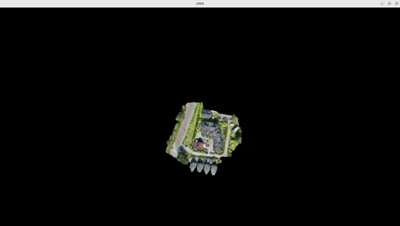
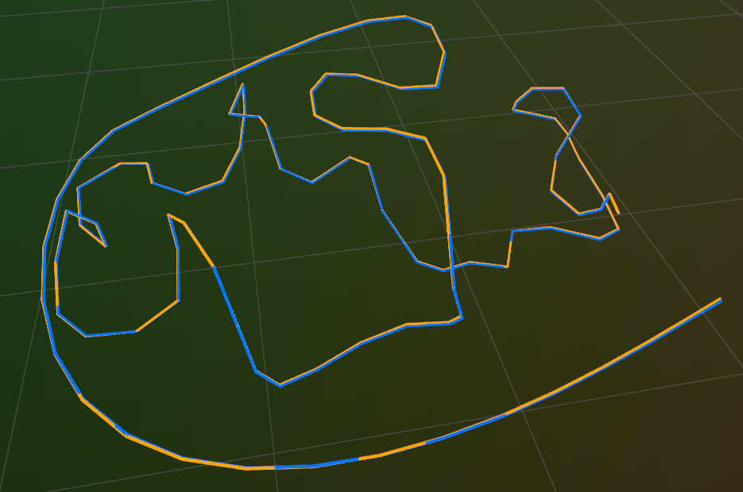
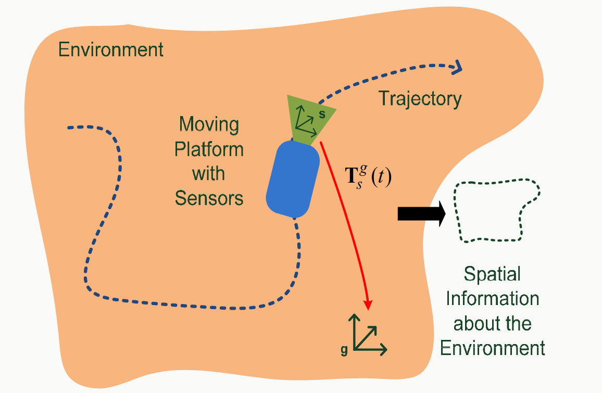

|
Faris Hajdarpasic I am a graduated Master student at the University of Bonn where I was specializing in Mobile Sensing and Robotics. My studies mostly focused around SLAM and 3D scene reconstruction, where I took projects and courses with multiple research groups of the Center for Robotics University of Bonn. I did my Master Thesis at the StachnissLab (Photogrammetry and Robotics Lab) and I was research student assistant at the Humanoid Robots Lab. In 2024, I was selected to participate in the Robotics Summer School organized by ETH Zurich. My core interest lies in two fundamental problems: precise localization and reality mapping — knowing exactly where we are in the world and accurately modeling it in 3D from real-world sensor data. I want to go beyond purely geometric maps — building rich 3D representations that embed semantic, photometric, and structural information, serving as a foundation for downstream tasks such as scene understanding, autonomous navigation, geospatial analysis, and data-driven decision-making. I believe that accurate, information-rich 3D representations of the world are fundamental infrastructure — valuable far beyond any single domain, wherever there is a need to understand, analyze, or interact with the physical world. |

|
Interests and SkillsI am mostly interested in 3D vision, specifically SLAM, Mapping and 3D reconstruction. As for the technical skills, I was mostly using Python, PyTorch, C++ and CUDA. Besides that, I have experience with using ROS, Git and Docker. |
Projects |
|
 |
Large-Scale Gaussian Splatting Renderer
Faris Hajdarpasic GitHub Repository Keywords: C++, CUDA, Gaussian Splatting, Level-of-Detail, Octree, OpenGL A renderer for large-scale 3D Gaussian Splatting scenes that exceed GPU memory capacity. The scene is organized in an octree where each internal node contains coarser Gaussians representing the Gaussians in its children. Per frame, the octree is traversed to select a frustum-visible subset, choosing finer detail for Gaussians close to the camera and coarser approximations for distant ones. The selected Gaussians are streamed to the GPU and rasterized using the diff-gaussian-rasterization kernel, enabling efficient rendering of scenes that would otherwise not fit in GPU memory. |

|
Large-Scale LiDAR-Visual Mapping using Gaussian Splatting
and Neural Distance Field
Master Thesis Faris Hajdarpasic, Yue Pan, Xingguang Zhong, Cyrill Stachniss PDF and Presentation GitHub Repository Keywords: PyTorch, AutoGrad, Python, Signed Distance Field, Radiance Field, Deep Learning, Clustering Accurate and photorealistic 3D maps of the environment are valuable across a wide range of applications. We propose a method that combines LiDAR and camera data, utilizing a radiance field and signed distance field to produce maps that are both geometrically accurate and photorealistic. We also address the challenge of dynamic object removal in both sensor modalities — detecting potentially dynamic objects in image space using Grounded SAM 2, and identifying them in LiDAR space using Principal Component Analysis (PCA) — achieving a clean reconstruction of the static world even in the presence of dynamic elements. |
|
 |
Feature-based RGB-D Visual SLAM
Faris Hajdarpasic GitHub Repository Keywords: C++, ORB, SLAM, Bundle Adjustment, Factor Graph, GTSAM, Sophus, Rerun A C++ implementation of a feature-based RGB-D visual SLAM system. Frames are tracked against a local map using ORB features, with pose estimation via P3P+RANSAC and motion-only bundle adjustment. Local mapping manages keyframe selection, landmark creation, covisibility graph updates, and culling of low-quality map points. Poses and landmarks are jointly refined through local bundle adjustment using a factor graph framework, with pose graph optimization for global consistency. |

|
Parallel Computing Lab: NVIDIA CUDA C++ Programming
Faris Hajdarpasic, Tobias Zaenker, Maren Bennewitz GitHub Repository Keywords: C++, CUDA, GPU, Path Planning, Visibility Graph, A* This project implements the A* path planning algorithm on a precomputed Visibility Graph using the NVIDIA CUDA framework, with both CPU and GPU versions developed and compared to analyze the performance benefits of GPU parallelism for computationally intensive graph search. |

|
Monocular and Stereo Visual Odometry for Autonomous
Vehicles
Bachelor Thesis Faris Hajdarpasic, Dinko Osmankovic GitHub Repository Keywords: Python, Computer Vision, Multiple View Geometry, Visual Odometry This project implements monocular and stereo visual odometry pipelines for estimating the 6-DoF pose of a vehicle from camera data alone, covering the full pipeline from feature extraction and matching to pose estimation using multiple view geometry. |
|
 |
Application and Evaluation of Mobile Sensor Systems
Faris Hajdarpasic, Shashank Dammalapati, Panyawat Rattana, Björn Seine, Lasse Klingbeil Report and Presentation Keywords: Python, Extended Kalman Filter, LiDAR, IMU, GNSS This project focused on the acquisition, processing, and evaluation of 3D point cloud data. A campus library was measured twice — using TLS and a mobile mapping system (MMS) consisting of LiDAR, IMU, and GNSS antenna. Two georeferenced point clouds were obtained and compared using multiple evaluation techniques. |

|
Programming Techniques in C++
Faris Hajdarpasic, Zeljko Juric GitHub Repository This course focuses on programming techniques in C++ and covers a wide range of topics. |